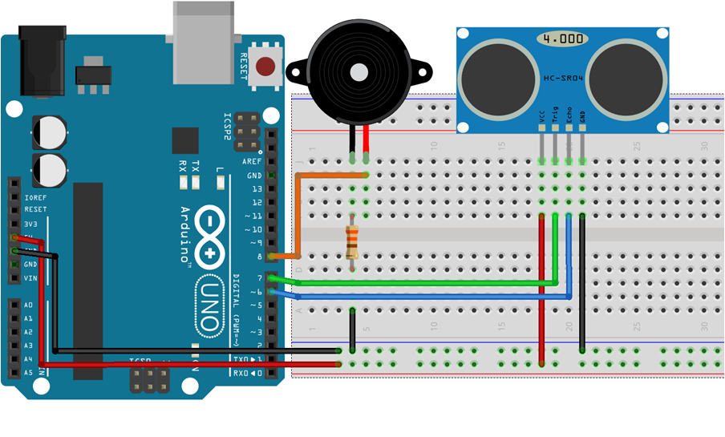

ARDUİNO İLE MESAFE SENSÖRÜ
Sistemin Genel Yapısı
Proje Maliyeti: Devre tasarımında ve uygulamasında kullanılan malzemeler ise şöyledir;
| 1adet Buzzer | 1,5TL |
| 1adet direnç | 0,25KR |
| 1adet HC-SR04 | 15TL |
| İki ucu erkek jamper kablolar | 5TL |
| Breadboard | 7,5TL |
| Arduino Uno | 27,5 TL |
| TOPLAM = | 56,75TL |
|  | Proje Devre Tasarımı : Arduino ile mesafe sensörü projesinin devre tasarımı aşağıda verilmiştir. Devrenin Arduino, HC-SR4, buzzer, direnç ve kablolardan yararlanarak nasıl bağlantı kurulduğu açıkça belirtilmiştir. |
Park sensörü ; sürücülerin araçlarını park ettikleri esnada herhangi başka bir araca veya nesneye çapmamaları kolay park edebilmeleri için nesne ile arasındaki mesafeye göre uyarı sesi veren bir sistemdir.
Bir park sensörü buzzer, HC-SR04 ultrasonik mesafe sensöründen oluşmaktadır. HC-SR04 ultrasonik mesafe sensörünün bir ucundan çıkan ses dalgası diğer ucuna gelene kadar olan zamanı ölçerek nesne ile arasındaki mesafeyi ölçer daha sonra mesafeye göre buzzer bizim analayabileceğimiz seslere dönüştürür. Buzzer mesafe ile ters orantıda ses çıkarır yani mesafe azaldıkça buzzerdan gelen ses hızlanır mesafe arttıkça ses yavaşlar belli bir mesafeyi aştıktan sonra ses tamamen kesilir.
@2020 Ardiuno